CODING AGENTS AS PIXEL WORLD MODELS
traex/DeepSeek-V4.1-Flash · instance_preservation_0009
点击播放 · 原生 RGB 像素
逐轮保存的候选
回放视频、检查图与代码变化。
每份候选均可单独播放。实际图片检查记录在下方工具轨迹中。
候选 01播放与检查图
点击播放 · 原生 RGB 像素

展开代码变化
--- 上一保存版本
+++ 本次保存版本
@@ -0,0 +1,804 @@
+"""Procedural PixelWorld renderer for two sandy kangaroos fighting."""
+
+from __future__ import annotations
+
+import math
+from pathlib import Path
+
+import numpy as np
+from PIL import Image, ImageDraw, ImageFilter
+
+from artifact_io import save
+
+
+WIDTH = 256
+HEIGHT = 144
+FRAMES = 20
+FPS = 4.0
+SS = 4
+CW = WIDTH * SS
+CH = HEIGHT * SS
+
+OUTLINE = (62, 43, 31, 255)
+FUR = (201, 157, 101, 255)
+FUR_LIGHT = (230, 188, 126, 255)
+FUR_MID = (190, 143, 89, 255)
+FUR_DARK = (145, 99, 62, 255)
+FUR_FAR = (166, 119, 76, 255)
+
+
+def sc(point):
+ return tuple(round(value * SS) for value in point)
+
+
+def polygon_sc(points):
+ return [sc(point) for point in points]
+
+
+def smoothstep(value):
+ value = max(0.0, min(1.0, value))
+ return value * value * (3.0 - 2.0 * value)
+
+
+def bump(t, start, peak, end):
+ """Smooth asymmetric pulse with its maximum at peak."""
+ if t <= start or t >= end:
+ return 0.0
+ if t < peak:
+ return smoothstep((t - start) / max(1e-6, peak - start))
+ return 1.0 - smoothstep((t - peak) / max(1e-6, end - peak))
+
+
+def catmull_rom(points, samples=8, closed=False):
+ pts = [np.asarray(point, dtype=float) for point in points]
+ if closed:
+ pts = [pts[-1]] + pts + [pts[0], pts[1]]
+ else:
+ pts = [pts[0]] + pts + [pts[-1]]
+ result = []
+ for index in range(1, len(pts) - 2):
+ p0, p1, p2, p3 = pts[index - 1 : index + 3]
+ for step in range(samples):
+ u = step / samples
+ u2 = u * u
+ u3 = u2 * u
+ point = 0.5 * (
+ (2.0 * p1)
+ + (-p0 + p2) * u
+ + (2.0 * p0 - 5.0 * p1 + 4.0 * p2 - p3) * u2
+ + (-p0 + 3.0 * p1 - 3.0 * p2 + p3) * u3
+ )
+ result.append(tuple(point))
+ result.append(tuple(pts[-2]))
+ return result
+
+
+def cubic_points(p0, p1, p2, p3, samples=24):
+ p0, p1, p2, p3 = map(np.asarray, (p0, p1, p2, p3))
+ points = []
+ for index in range(samples + 1):
+ t = index / samples
+ u = 1.0 - t
+ point = u**3 * p0 + 3.0 * u * u * t * p1 + 3.0 * u * t * t * p2 + t**3 * p3
+ points.append(tuple(point))
+ return points
+
+
+def tapered_stroke(draw, points, widths, fill, outline=OUTLINE, outline_extra=1.35):
+ pts = np.asarray(points, dtype=float)
+ if len(pts) < 2:
+ return
+ tangents = np.empty_like(pts)
+ tangents[0] = pts[1] - pts[0]
+ tangents[-1] = pts[-1] - pts[-2]
+ tangents[1:-1] = pts[2:] - pts[:-2]
+ lengths = np.linalg.norm(tangents, axis=1)
+ lengths[lengths < 1e-6] = 1.0
+ normals = np.column_stack((-tangents[:, 1] / lengths, tangents[:, 0] / lengths))
+ widths = np.asarray(widths, dtype=float)
+
+ if outline is not None:
+ w = (widths + outline_extra) * SS * 0.5
+ left = pts + normals * w[:, None]
+ right = pts - normals * w[:, None]
+ draw.polygon(polygon_sc(np.vstack((left, right[::-1]))), fill=outline)
+ draw.ellipse(
+ [
+ (pts[0, 0] - w[0]) * SS,
+ (pts[0, 1] - w[0]) * SS,
+ (pts[0, 0] + w[0]) * SS,
+ (pts[0, 1] + w[0]) * SS,
+ ],
+ fill=outline,
+ )
+ draw.ellipse(
+ [
+ (pts[-1, 0] - w[-1]) * SS,
+ (pts[-1, 1] - w[-1]) * SS,
+ (pts[-1, 0] + w[-1]) * SS,
+ (pts[-1, 1] + w[-1]) * SS,
+ ],
+ fill=outline,
+ )
+
+ w = widths * SS * 0.5
+ left = pts + normals * w[:, None]
+ right = pts - normals * w[:, None]
+ draw.polygon(polygon_sc(np.vstack((left, right[::-1]))), fill=fill)
+ draw.ellipse(
+ [
+ (pts[0, 0] - w[0]) * SS,
+ (pts[0, 1] - w[0]) * SS,
+ (pts[0, 0] + w[0]) * SS,
+ (pts[0, 1] + w[0]) * SS,
+ ],
+ fill=fill,
+ )
+ draw.ellipse(
+ [
+ (pts[-1, 0] - w[-1]) * SS,
+ (pts[-1, 1] - w[-1]) * SS,
+ (pts[-1, 0] + w[-1]) * SS,
+ (pts[-1, 1] + w[-1]) * SS,
+ ],
+ fill=fill,
+ )
+
+
+def capsule(draw, p0, p1, radius, fill, outline=OUTLINE, outline_extra=1.2):
+ tapered_stroke(
+ draw,
+ [p0, p1],
+ [radius * 2.0, radius * 2.0],
+ fill,
+ outline=outline,
+ outline_extra=outline_extra,
+ )
+
+
+def ellipse_polygon(center, rx, ry, angle=0.0, count=32):
+ cx, cy = center
+ ca, sa = math.cos(angle), math.sin(angle)
+ result = []
+ for index in range(count):
+ theta = 2.0 * math.pi * index / count
+ x, y = rx * math.cos(theta), ry * math.sin(theta)
+ result.append((cx + x * ca - y * sa, cy + x * sa + y * ca))
+ return result
+
+
+def draw_soft_ellipse(layer, box, color, blur=0):
+ draw = ImageDraw.Draw(layer, "RGBA")
+ draw.ellipse([round(value * SS) for value in box], fill=color)
+ if blur:
+ return layer.filter(ImageFilter.GaussianBlur(blur * SS))
+ return layer
+
+
+def make_background():
+ y = np.linspace(0.0, 1.0, CH, dtype=np.float32)[:, None]
+ sky_stops = [
+ (0.00, np.array([84, 124, 142], dtype=np.float32)),
+ (0.38, np.array([134, 155, 151], dtype=np.float32)),
+ (0.68, np.array([214, 181, 139], dtype=np.float32)),
+ (0.71, np.array([235, 199, 150], dtype=np.float32)),
+ ]
+ rgb = np.zeros((CH, 1, 3), dtype=np.float32)
+ for (a, ca), (b, cb) in zip(sky_stops[:-1], sky_stops[1:]):
+ mask = (y[:, 0] >= a) & (y[:, 0] <= b)
+ amount = np.clip((y[mask, 0] - a) / (b - a), 0.0, 1.0)[:, None]
+ rgb[mask] = (ca[None, :] * (1.0 - amount) + cb[None, :] * amount)[:, None, :]
+ rgb = np.repeat(rgb, CW, axis=1)
+
+ ground_start = 0.705
+ ground_mask = y[:, 0] >= ground_start
+ ground_t = np.clip((y[ground_mask, 0] - ground_start) / (1.0 - ground_start), 0.0, 1.0)
+ top = np.array([175, 137, 91], dtype=np.float32)
+ bottom = np.array([111, 78, 51], dtype=np.float32)
+ ground = top[None, :] * (1.0 - ground_t[:, None]) + bottom[None, :] * ground_t[:, None]
+ rgb[ground_mask] = np.repeat(ground[:, None, :], CW, axis=1)
+
+ image = Image.fromarray(np.clip(rgb, 0, 255).astype(np.uint8), "RGB").convert("RGBA")
+ draw = ImageDraw.Draw(image, "RGBA")
+
+ # A pale, low sun gives the dust and fur a warm edge without flattening the sky.
+ sun_layer = Image.new("RGBA", (CW, CH), (0, 0, 0, 0))
+ sun_draw = ImageDraw.Draw(sun_layer, "RGBA")
+ sun_draw.ellipse(sc((197, 30, 222, 55)), fill=(255, 221, 167, 38))
+ sun_layer = sun_layer.filter(ImageFilter.GaussianBlur(8 * SS))
+ image = Image.alpha_composite(image, sun_layer)
+ draw = ImageDraw.Draw(image, "RGBA")
+ draw.ellipse(sc((203, 36, 216, 49)), fill=(248, 214, 160, 80))
+
+ # Distant escarpment, low scrub line, and a second horizon for depth.
+ back_hill = catmull_rom(
+ [
+ (-10, 102),
+ (16, 94),
+ (43, 98),
+ (67, 93),
+ (94, 99),
+ (122, 96),
+ (151, 101),
+ (180, 95),
+ (208, 99),
+ (238, 92),
+ (270, 98),
+ (270, 111),
+ (-10, 111),
+ ],
+ samples=6,
+ )
+ draw.polygon(polygon_sc(back_hill), fill=(121, 119, 91, 210))
+ front_hill = catmull_rom(
+ [
+ (-8, 105),
+ (18, 101),
+ (46, 105),
+ (72, 100),
+ (99, 106),
+ (128, 102),
+ (157, 105),
+ (186, 101),
+ (217, 106),
+ (245, 102),
+ (270, 105),
+ (270, 116),
+ (-8, 116),
+ ],
+ samples=5,
+ )
+ draw.polygon(polygon_sc(front_hill), fill=(93, 101, 74, 230))
+
+ # Ground bands and sparse stones keep the foreground active but subordinate.
+ draw.polygon(
+ polygon_sc(catmull_rom([(-5, 112), (55, 110), (118, 114), (186, 111), (261, 115), (261, 148), (-5, 148)], 6)),
+ fill=(156, 119, 78, 105),
+ )
+ rng = np.random.default_rng(18)
+ for _ in range(150):
+ x = rng.uniform(0, WIDTH)
+ yy = rng.uniform(105, 144)
+ radius = rng.uniform(0.25, 1.35) * (0.55 + (yy - 105) / 45)
+ shade = rng.choice(
+ [
+ (83, 61, 43, 90),
+ (225, 185, 127, 52),
+ (128, 91, 59, 85),
+ (192, 148, 96, 54),
+ ]
+ )
+ draw.ellipse(sc((x - radius, yy - radius * 0.55, x + radius, yy + radius * 0.55)), fill=tuple(shade))
+
+ for x, yy, scale in [
+ (21, 108, 0.8),
+ (52, 113, 0.65),
+ (231, 111, 0.9),
+ (244, 119, 0.65),
+ (14, 126, 0.75),
+ (207, 128, 0.55),
+ ]:
+ color = (72, 78, 53, 220)
+ for angle in (-0.95, -0.58, -0.22):
+ tip = (x + math.cos(angle) * 6.5 * scale, yy + math.sin(angle) * 6.5 * scale)
+ capsule(draw, (x, yy), tip, 0.65 * scale, color, outline=None)
+
+ # Fine sand ripples.
+ for row in range(7):
+ yy = 116 + row * 4.1
+ offset = (row % 3) * 7
+ for xx in range(-10 + offset, WIDTH + 10, 21):
+ draw.arc(sc((xx, yy - 1.2, xx + 14, yy + 1.8)), 195, 345, fill=(90, 64, 43, 38), width=max(1, SS // 2))
+
+ return image
+
+
+def shade_polygon(canvas, points, base, light, dark, seed=0):
+ """Fill a smooth polygon with restrained fur shading and fine texture."""
+ mask = Image.new("L", (CW, CH), 0)
+ mask_draw = ImageDraw.Draw(mask)
+ mask_draw.polygon(polygon_sc(points), fill=255)
+ mask_array = np.asarray(mask, dtype=np.float32) / 255.0
+ if not np.any(mask_array):
+ return
+
+ yy, xx = np.mgrid[0:CH, 0:CW]
+ points_array = np.asarray(points)
+ min_y, max_y = points_array[:, 1].min(), points_array[:, 1].max()
+ min_x, max_x = points_array[:, 0].min(), points_array[:, 1].max()
+ vertical = np.clip((yy / SS - min_y) / max(1.0, max_y - min_y), 0.0, 1.0)
+ horizontal = np.clip((xx / SS - min_x) / max(1.0, max_x - min_x), 0.0, 1.0)
+
+ rng = np.random.default_rng(seed)
+ noise = rng.normal(0.0, 1.0, (CH, CW)).astype(np.float32)
+ noise = np.asarray(
+ Image.fromarray(np.uint8(np.clip(noise * 24.0 + 128.0, 0, 255))).filter(ImageFilter.GaussianBlur(SS * 0.6)),
+ dtype=np.float32,
+ )
+ noise = (noise - 128.0) / 128.0
+
+ base = np.asarray(base[:3], dtype=np.float32)
+ light = np.asarray(light[:3], dtype=np.float32)
+ dark = np.asarray(dark[:3], dtype=np.float32)
+ mix_light = np.clip(0.55 * (1.0 - vertical) + 0.18 * (1.0 - horizontal) + noise * 0.08, 0.0, 1.0)
+ mix_dark = np.clip(0.45 * vertical + 0.20 * horizontal + noise * 0.06, 0.0, 1.0)
+ colors = base[None, None, :] * (1.0 - mix_light[:, :, None]) + light[None, None, :] * mix_light[:, :, None]
+ colors = colors * (1.0 - 0.40 * mix_dark[:, :, None]) + dark[None, None, :] * (0.40 * mix_dark[:, :, None])
+ colors += noise[:, :, None] * 7.0
+ rgba = np.dstack((np.clip(colors, 0, 255), mask_array * 255.0)).astype(np.uint8)
+ layer = Image.fromarray(rgba, "RGBA")
+ canvas.alpha_composite(layer)
+
+
+def draw_torso(canvas, points, facing, seed):
+ draw = ImageDraw.Draw(canvas, "RGBA")
+ draw.polygon(polygon_sc(points), fill=OUTLINE)
+ # Slightly inset silhouette leaves a controlled dark contour.
+ center = np.mean(np.asarray(points), axis=0)
+ inner = [tuple(center + (np.asarray(point) - center) * 0.955) for point in points]
+ shade_polygon(canvas, inner, FUR, FUR_LIGHT, FUR_DARK, seed)
+
+ # Belly plane catches light; a darker flank turns away from the opponent.
+ belly_center = center + np.array([facing * 2.2, 3.0])
+ belly = ellipse_polygon(belly_center, 5.2, 13.5, facing * 0.10, count=24)
+ shade_polygon(canvas, belly, FUR_LIGHT, (242, 205, 150, 255), FUR_MID, seed + 9)
+ flank_center = center + np.array([-facing * 4.5, -3.0])
+ flank = ellipse_polygon(flank_center, 3.6, 14.0, -facing * 0.08, count=22)
+ shade_polygon(canvas, flank, FUR_MID, FUR, FUR_DARK, seed + 13)
+
+ # A few short fur strokes give scale without creating visual noise.
+ rng = np.random.default_rng(seed + 21)
+ draw = ImageDraw.Draw(canvas, "RGBA")
+ for _ in range(14):
+ x = rng.uniform(center[0] - 6, center[0] + 6)
+ y = rng.uniform(center[1] - 24, center[1] + 7)
+ length = rng.uniform(1.0, 2.5)
+ draw.line(sc((x, y, x - facing * length, y + rng.uniform(-0.7, 0.7))), fill=(113, 76, 49, 85), width=max(1, SS // 2))
+
+
+def solve_elbow(shoulder, paw, upper, lower, bend):
+ shoulder = np.asarray(shoulder, dtype=float)
+ paw = np.asarray(paw, dtype=float)
+ delta = paw - shoulder
+ distance = float(np.linalg.norm(delta))
+ distance = max(1e-5, min(distance, upper + lower - 1e-4))
+ direction = delta / max(1e-5, np.linalg.norm(delta))
+ along = (upper * upper - lower * lower + distance * distance) / (2.0 * distance)
+ height = math.sqrt(max(0.0, upper * upper - along * along))
+ perpendicular = np.array([-direction[1], direction[0]]) * bend
+ return tuple(shoulder + direction * along + perpendicular * height)
+
+
+def draw_arm(draw, shoulder, paw, upper, lower, radius, color, bend=1.0):
+ elbow = solve_elbow(shoulder, paw, upper, lower, bend)
+ capsule(draw, shoulder, elbow, radius, color, outline=OUTLINE, outline_extra=1.1)
+ capsule(draw, elbow, paw, radius * 0.82, color, outline=OUTLINE, outline_extra=1.0)
+ # Highlight on the upper edge and a small dark palm.
+ direction = np.asarray(paw) - np.asarray(shoulder)
+ norm = max(1e-5, float(np.linalg.norm(direction)))
+ offset = np.array([-direction[1], direction[0]]) / norm * radius * 0.42
+ tapered_stroke(
+ draw,
+ [tuple(np.asarray(shoulder) + offset), tuple(np.asarray(elbow) + offset)],
+ [radius * 0.38, radius * 0.34],
+ FUR_LIGHT if color != FUR_FAR else (190, 142, 91, 255),
+ outline=None,
+ )
+ draw.ellipse(
+ [
+ (paw[0] - radius * 0.9) * SS,
+ (paw[1] - radius * 0.7) * SS,
+ (paw[0] + radius * 0.9) * SS,
+ (paw[1] + radius * 0.7) * SS,
+ ],
+ fill=(96, 65, 47, 255),
+ outline=OUTLINE,
+ width=max(1, SS // 2),
+ )
+ return elbow
+
+
+def world_point(local, anchor, facing, lean, bob):
+ x, y = local
+ # Upper body leans while the feet and hips stay planted.
+ x += lean * max(0.0, min(1.0, (-y + 3.0) / 42.0))
+ return (anchor[0] + facing * x, anchor[1] + bob + y)
+
+
+def mirrored_point(local, anchor, facing, lean, bob):
+ return world_point((local[0], local[1]), anchor, facing, lean, bob)
+
+
+def draw_kangaroo(
+ canvas,
+ anchor,
+ facing,
+ lean,
+ bob,
+ tail_sway,
+ near_leg,
+ far_leg,
+ arms,
+ head_recoil,
+ ear_flare,
+ dust_impact,
+ seed,
+):
+ draw = ImageDraw.Draw(canvas, "RGBA")
+
+ def wp(local):
+ return world_point(local, anchor, facing, lean, bob)
+
+ # Tail: a broad, muscular base that tapers to the ground behind the animal.
+ tail_points = cubic_points(
+ wp((-6.5, -1.5)),
+ wp((-18.0, 4.5 + tail_sway * 0.35)),
+ wp((-32.0, 15.5 - tail_sway * 0.55)),
+ wp((-28.0 + tail_sway, 25.5)),
+ samples=26,
+ )
+ widths = np.linspace(8.4, 1.8, len(tail_points))
+ tapered_stroke(draw, tail_points, widths, FUR_MID, outline=OUTLINE, outline_extra=1.25)
+ highlight_points = tail_points[2:18]
+ tapered_stroke(
+ draw,
+ [(x, y - 1.3) for x, y in highlight_points],
+ np.linspace(1.4, 0.45, len(highlight_points)),
+ (210, 164, 106, 255),
+ outline=None,
+ )
+
+ # Far hind leg, intentionally darker.
+ far_hip = wp((-3.0, -1.0))
+ far_knee = wp((-9.0 + far_leg[0], 10.5 + far_leg[1]))
+ far_ankle = wp((-3.0 + far_leg[0] * 0.6, 24.0 + far_leg[1] * 0.4))
+ far_toe = wp((9.0 + far_leg[0] * 0.3, 27.0 + far_leg[1] * 0.15))
+ far_points = cubic_points(far_hip, far_knee, far_ankle, far_toe, samples=18)
+ far_widths = np.concatenate(
+ [
+ np.linspace(11.0, 8.0, 7),
+ np.linspace(8.0, 4.0, 7),
+ np.linspace(4.0, 3.1, 5),
+ ]
+ )
+ tapered_stroke(draw, far_points, far_widths, FUR_FAR, outline=OUTLINE, outline_extra=1.15)
+ capsule(draw, far_ankle, far_toe, 2.4, FUR_FAR, outline=OUTLINE, outline_extra=1.0)
+
+ # Neck sits behind the torso and head.
+ neck_top = wp((7.0 + lean * 0.05, -47.0 + head_recoil * 0.4))
+ neck_bottom = wp((2.0, -35.0))
+ tapered_stroke(draw, [neck_bottom, neck_top], [7.5, 6.2], FUR, outline=OUTLINE, outline_extra=1.1)
+
+ torso_local = [
+ (-7.2, -34.0),
+ (-3.5, -38.7),
+ (1.8, -38.0),
+ (7.0, -33.0),
+ (9.8, -23.5),
+ (9.6, -13.0),
+ (7.2, -4.5),
+ (2.2, 1.0),
+ (-4.2, 1.0),
+ (-9.6, -5.2),
+ (-11.5, -17.0),
+ (-10.4, -28.5),
+ ]
+ torso_points = catmull_rom([wp(point) for point in torso_local], samples=5, closed=True)
+ draw_torso(canvas, torso_points, facing, seed)
+
+ # Near hind leg overlays the lower torso, establishing the planted stance.
+ near_hip = wp((4.0, -0.5))
+ near_knee = wp((10.0 + near_leg[0], 10.0 + near_leg[1]))
+ near_ankle = wp((4.0 + near_leg[0] * 0.65, 24.0 + near_leg[1] * 0.45))
+ near_toe = wp((16.5 + near_leg[0] * 0.35, 27.0 + near_leg[1] * 0.18))
+ near_points = cubic_points(near_hip, near_knee, near_ankle, near_toe, samples=20)
+ near_widths = np.concatenate(
+ [
+ np.linspace(12.0, 8.6, 8),
+ np.linspace(8.6, 4.2, 8),
+ np.linspace(4.2, 3.2, 5),
+ ]
+ )
+ tapered_stroke(draw, near_points, near_widths, FUR, outline=OUTLINE, outline_extra=1.2)
+ capsule(draw, near_ankle, near_toe, 2.65, FUR, outline=OUTLINE, outline_extra=1.05)
+ tapered_stroke(
+ draw,
+ [(x, y - 0.9) for x, y in near_points[8:17]],
+ np.linspace(1.6, 0.6, 9),
+ (222, 176, 115, 255),
+ outline=None,
+ )
+
+ # Toe separations and a dark sole make the long feet read clearly.
+ for frac in (0.72, 0.86):
+ split = (
+ near_ankle[0] + (near_toe[0] - near_ankle[0]) * frac,
+ near_ankle[1] + (near_toe[1] - near_ankle[1]) * frac,
+ )
+ draw.line(
+ sc((split[0], split[1] - 1.5, split[0] + facing * 3.2, split[1] + 0.5)),
+ fill=(99, 68, 47, 185),
+ width=max(1, SS // 2),
+ )
+
+ # Arms are solved as two-link limbs so punches keep believable elbows.
+ shoulder_far = wp((4.8, -32.0))
+ shoulder_near = wp((7.0, -29.8))
+ far_paw = wp(arms["far_paw"])
+ near_paw = wp(arms["near_paw"])
+ draw_arm(draw, shoulder_far, far_paw, 15.2, 13.0, 2.45, FUR_FAR, bend=1.0)
+ draw_arm(draw, shoulder_near, near_paw, 16.0, 13.8, 2.65, FUR, bend=1.0)
+
+ # Head: long muzzle, small crown, alert ears, and a visible eye.
+ head_center = wp((10.0, -51.5 + head_recoil * 0.55))
+ head_angle = facing * (-0.09 + head_recoil * 0.025)
+ head_rx, head_ry = 10.8, 7.0
+ head = ellipse_polygon(head_center, head_rx, head_ry, head_angle, count=30)
+ draw.polygon(polygon_sc(head), fill=OUTLINE)
+ center = np.mean(np.asarray(head), axis=0)
+ head_inner = [tuple(center + (np.asarray(point) - center) * 0.94) for point in head]
+ shade_polygon(canvas, head_inner, FUR, FUR_LIGHT, FUR_DARK, seed + 31)
+
+ muzzle_base = wp((16.5, -51.0 + head_recoil * 0.55))
+ muzzle_tip = wp((22.0, -50.0 + head_recoil * 0.55))
+ capsule(draw, muzzle_base, muzzle_tip, 4.2, FUR, outline=OUTLINE, outline_extra=1.0)
+ tapered_stroke(
+ draw,
+ [wp((15.0, -54.0 + head_recoil * 0.55)), wp((21.0, -52.5 + head_recoil * 0.55))],
+ [1.25, 0.45],
+ (235, 196, 139, 255),
+ outline=None,
+ )
+
+ # Ears are slightly asymmetric and flare when the animal braces for impact.
+ ear_specs = [
+ ((-2.6, -2.0), (-6.0 - ear_flare * 0.8, -16.5 - ear_flare * 1.4)),
+ ((3.0, -2.8), (1.3 + ear_flare * 0.35, -17.6 - ear_flare * 1.8)),
+ ]
+ for index, (base_offset, tip_offset) in enumerate(ear_specs):
+ ear_base = (
+ head_center[0] + facing * base_offset[0],
+ head_center[1] + base_offset[1],
+ )
+ ear_tip = (
+ head_center[0] + facing * tip_offset[0],
+ head_center[1] + tip_offset[1],
+ )
+ tapered_stroke(
+ draw,
+ [ear_base, ear_tip],
+ [3.3, 1.6],
+ FUR if index == 1 else FUR_MID,
+ outline=OUTLINE,
+ outline_extra=1.0,
+ )
+ inner_base = (
+ ear_base[0] + facing * 0.35,
+ ear_base[1] - 0.5,
+ )
+ inner_tip = (
+ ear_tip[0] + facing * 0.1,
+ ear_tip[1] + 1.5,
+ )
+ tapered_stroke(draw, [inner_base, inner_tip], [1.05, 0.35], (154, 101, 74, 255), outline=None)
+
+ # Face details.
+ eye = wp((13.8, -53.0 + head_recoil * 0.55))
+ draw.ellipse(
+ [
+ (eye[0] - 1.15) * SS,
+ (eye[1] - 1.15) * SS,
+ (eye[0] + 1.15) * SS,
+ (eye[1] + 1.15) * SS,
+ ],
+ fill=(42, 30, 23, 255),
+ )
+ glint = (eye[0] - 0.35, eye[1] - 0.35)
+ draw.ellipse(
+ [
+ (glint[0] - 0.35) * SS,
+ (glint[1] - 0.35) * SS,
+ (glint[0] + 0.35) * SS,
+ (glint[1] + 0.35) * SS,
+ ],
+ fill=(245, 229, 198, 210),
+ )
+ nose = wp((23.0, -50.0 + head_recoil * 0.55))
+ draw.ellipse(
+ [
+ (nose[0] - 1.0) * SS,
+ (nose[1] - 0.8) * SS,
+ (nose[0] + 0.9) * SS,
+ (nose[1] + 0.8) * SS,
+ ],
+ fill=(61, 39, 31, 255),
+ )
+ mouth_start = wp((19.0, -47.4 + head_recoil * 0.55))
+ mouth_end = wp((22.1, -47.9 + head_recoil * 0.55))
+ draw.line(sc((*mouth_start, *mouth_end)), fill=(92, 55, 43, 210), width=max(1, SS // 2))
+
+ return {
+ "near_paw": near_paw,
+ "far_paw": far_paw,
+ "head": head_center,
+ "near_foot": near_toe,
+ }
+
+
+def make_dust(layer, bursts, t):
+ draw = ImageDraw.Draw(layer, "RGBA")
+ for burst in bursts:
+ x, y, strength, seed = burst
+ if strength <= 0.01:
+ continue
+ rng = np.random.default_rng(seed)
+ for index in range(13):
+ phase = (t * 1.7 + index * 0.137) % 1.0
+ px = x + rng.normal(0, 7.0) * (0.45 + strength) + (phase - 0.5) * 12.0
+ py = y - phase * rng.uniform(3.0, 10.0) * strength
+ radius = rng.uniform(2.0, 6.0) * (0.55 + strength) * (1.0 - 0.25 * phase)
+ alpha = int(55 * strength * (1.0 - 0.65 * phase))
+ draw.ellipse(sc((px - radius, py - radius * 0.55, px + radius, py + radius * 0.55)), fill=(220, 186, 135, alpha))
+ return layer.filter(ImageFilter.GaussianBlur(1.3 * SS))
+
+
+def pose_for_frame(frame):
+ t = frame / (FRAMES - 1)
+ left_jab = bump(t, 0.06, 0.19, 0.31)
+ right_jab = bump(t, 0.34, 0.47, 0.59)
+ grapple = bump(t, 0.55, 0.66, 0.78)
+ left_kick = bump(t, 0.70, 0.80, 0.90)
+ right_brace = bump(t, 0.73, 0.82, 0.93)
+ left_charge = bump(t, 0.88, 0.96, 1.01)
+ idle = math.sin(2.0 * math.pi * (0.85 * t + 0.08))
+ fast = math.sin(2.0 * math.pi * (2.1 * t + 0.17))
+
+ left_anchor = (99.0 + 3.1 * left_jab + 2.5 * left_charge - 2.0 * right_jab - 0.8 * grapple, 103.0 + 0.8 * idle)
+ right_anchor = (157.0 - 3.3 * right_jab - 2.8 * right_brace + 1.9 * left_jab + 0.9 * grapple, 103.0 - 0.7 * idle)
+
+ left_lean = 2.0 + 5.2 * left_jab + 2.0 * grapple + 3.2 * left_charge - 3.1 * right_jab - 1.7 * left_kick
+ right_lean = 2.0 + 5.0 * right_jab + 2.2 * grapple + 3.0 * right_brace - 3.0 * left_jab - 2.1 * left_kick
+
+ left_head = -3.3 * right_jab - 1.8 * grapple + 0.7 * fast
+ right_head = -3.6 * left_jab - 2.0 * grapple - 0.6 * fast
+ left_ear = 0.5 + 2.0 * right_jab + 1.1 * grapple
+ right_ear = 0.5 + 2.2 * left_jab + 1.3 * grapple
+
+ left_near = (13.0 + 18.0 * left_jab + 13.0 * grapple + 2.0 * left_charge, -37.5 + 2.0 * left_jab - 1.5 * grapple)
+ left_far = (10.5 + 11.0 * left_jab + 15.0 * grapple - 3.0 * right_jab, -32.0 + 5.0 * right_jab - 1.0 * grapple)
+ right_near = (13.0 + 18.0 * right_jab + 13.0 * grapple + 2.0 * right_brace, -37.0 + 2.0 * right_jab - 1.0 * grapple)
+ right_far = (10.5 + 11.0 * right_jab + 15.0 * grapple - 3.0 * left_jab, -32.0 + 5.0 * left_jab - 1.0 * grapple)
+
+ left_near_leg = (0.5 * idle, 0.4 * fast)
+ right_near_leg = (-0.4 * idle, 0.3 * fast)
+ left_far_leg = (-0.3 * idle, 0.2 * fast)
+ right_far_leg = (0.4 * idle, 0.2 * fast)
+ if left_kick > 0.02:
+ left_near_leg = (9.5 * left_kick, -10.5 * left_kick)
+ left_far_leg = (-1.2 * left_kick, 0.3)
+ if right_brace > 0.02:
+ right_near_leg = (1.6 * right_brace, 1.0 * right_brace)
+
+ tail_left = 1.3 * math.sin(2.0 * math.pi * (0.6 * t + 0.1)) + 3.0 * left_jab - 2.0 * right_jab
+ tail_right = 1.2 * math.sin(2.0 * math.pi * (0.6 * t + 0.55)) + 3.0 * right_jab - 2.0 * left_jab
+
+ return {
+ "t": t,
+ "left_anchor": left_anchor,
+ "right_anchor": right_anchor,
+ "left_lean": left_lean,
+ "right_lean": right_lean,
+ "left_head": left_head,
+ "right_head": right_head,
+ "left_ear": left_ear,
+ "right_ear": right_ear,
+ "left_arms": {"near_paw": left_near, "far_paw": left_far},
+ "right_arms": {"near_paw": right_near, "far_paw": right_far},
+ "left_near_leg": left_near_leg,
+ "right_near_leg": right_near_leg,
+ "left_far_leg": left_far_leg,
+ "right_far_leg": right_far_leg,
+ "tail_left": tail_left,
+ "tail_right": tail_right,
+ "left_jab": left_jab,
+ "right_jab": right_jab,
+ "grapple": grapple,
+ "left_kick": left_kick,
+ "right_brace": right_brace,
+ }
+
+
+def render_frame(background, frame):
+ pose = pose_for_frame(frame)
+ canvas = background.copy()
+ draw = ImageDraw.Draw(canvas, "RGBA")
+
+ # Contact shadow, softened and tinted by the warm ground.
+ shadow = Image.new("RGBA", (CW, CH), (0, 0, 0, 0))
+ shadow_draw = ImageDraw.Draw(shadow, "RGBA")
+ shadow_draw.ellipse(sc((58, 126, 132, 136)), fill=(48, 35, 26, 105))
+ shadow_draw.ellipse(sc((126, 125, 198, 136)), fill=(48, 35, 26, 100))
+ shadow = shadow.filter(ImageFilter.GaussianBlur(2.8 * SS))
+ canvas.alpha_composite(shadow)
+ draw = ImageDraw.Draw(canvas, "RGBA")
+
+ left_info = draw_kangaroo(
+ canvas,
+ pose["left_anchor"],
+ facing=1,
+ lean=pose["left_lean"],
+ bob=0.0,
+ tail_sway=pose["tail_left"],
+ near_leg=pose["left_near_leg"],
+ far_leg=pose["left_far_leg"],
+ arms=pose["left_arms"],
+ head_recoil=pose["left_head"],
+ ear_flare=pose["left_ear"],
+ dust_impact=pose["left_jab"],
+ seed=101 + frame * 17,
+ )
+ right_info = draw_kangaroo(
+ canvas,
+ pose["right_anchor"],
+ facing=-1,
+ lean=pose["right_lean"],
+ bob=0.0,
+ tail_sway=pose["tail_right"],
+ near_leg=pose["right_near_leg"],
+ far_leg=pose["right_far_leg"],
+ arms=pose["right_arms"],
+ head_recoil=pose["right_head"],
+ ear_flare=pose["right_ear"],
+ dust_impact=pose["right_jab"],
+ seed=223 + frame * 19,
+ )
+
+ # Dust bursts at the planted feet and under the kick.
+ dust = Image.new("RGBA", (CW, CH), (0, 0, 0, 0))
+ bursts = [
+ (86.0, 130.0, 0.20 + 0.35 * pose["grapple"], 1),
+ (169.0, 130.0, 0.20 + 0.35 * pose["grapple"], 2),
+ (111.0, 130.0, pose["left_kick"], 3),
+ (144.0, 130.0, 0.20 * pose["right_brace"], 4),
+ ]
+ dust = make_dust(dust, bursts, pose["t"])
+ canvas.alpha_composite(dust)
+
+ # A few sharp grains catch the low light around impact points.
+ draw = ImageDraw.Draw(canvas, "RGBA")
+ rng = np.random.default_rng(500 + frame)
+ dust_strength = max(pose["left_kick"], pose["grapple"] * 0.45)
+ for _ in range(int(22 * dust_strength)):
+ x = rng.uniform(90, 166)
+ y = rng.uniform(111, 133)
+ length = rng.uniform(0.8, 2.2)
+ draw.line(
+ sc((x, y, x + rng.uniform(-2.0, 2.0), y - length)),
+ fill=(234, 199, 146, rng.integers(80, 155)),
+ width=max(1, SS // 2),
+ )
+
+ # Gentle vignette and grain bind the scene without hiding detail.
+ yy, xx = np.mgrid[0:HEIGHT, 0:WIDTH]
+ nx = (xx - WIDTH * 0.5) / (WIDTH * 0.5)
+ ny = (yy - HEIGHT * 0.48) / (HEIGHT * 0.52)
+ vignette = np.clip((nx * nx + ny * ny - 0.38) * 0.24, 0.0, 0.26)
+ image = canvas.convert("RGB").resize((WIDTH, HEIGHT), Image.Resampling.LANCZOS)
+ array = np.asarray(image, dtype=np.float32)
+ array *= 1.0 - vignette[:, :, None]
+ grain_rng = np.random.default_rng(900 + frame)
+ grain = grain_rng.normal(0.0, 1.25, (HEIGHT, WIDTH, 1)).astype(np.float32)
+ array = np.clip(array + grain, 0, 255).astype(np.uint8)
+ return array
+
+
+def main():
+ case_dir = Path(__file__).resolve().parent
+ background = make_background()
+ frames = np.stack([render_frame(background, frame) for frame in range(FRAMES)], axis=0)
+ save(frames, case_dir)
+ print(f"wrote {FRAMES} frames to {case_dir / 'pixels.npz'}")
+
+
+if __name__ == "__main__":
+ main()
候选 02播放与检查图
点击播放 · 原生 RGB 像素

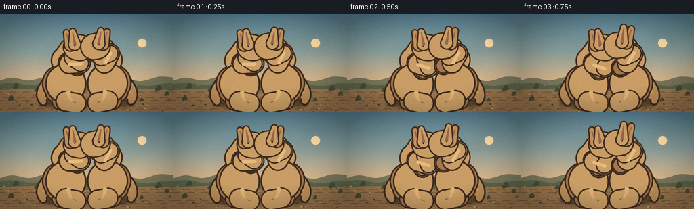
展开代码变化
--- 上一保存版本
+++ 本次保存版本
@@ -431,76 +431,76 @@
# Tail: a broad, muscular base that tapers to the ground behind the animal.
tail_points = cubic_points(
- wp((-6.5, -1.5)),
- wp((-18.0, 4.5 + tail_sway * 0.35)),
- wp((-32.0, 15.5 - tail_sway * 0.55)),
- wp((-28.0 + tail_sway, 25.5)),
+ wp((-7.0, -1.5)),
+ wp((-20.0, 4.0 + tail_sway * 0.35)),
+ wp((-35.0, 14.5 - tail_sway * 0.55)),
+ wp((-30.0 + tail_sway, 26.0)),
samples=26,
)
- widths = np.linspace(8.4, 1.8, len(tail_points))
+ widths = np.linspace(10.2, 2.0, len(tail_points))
tapered_stroke(draw, tail_points, widths, FUR_MID, outline=OUTLINE, outline_extra=1.25)
highlight_points = tail_points[2:18]
tapered_stroke(
draw,
[(x, y - 1.3) for x, y in highlight_points],
- np.linspace(1.4, 0.45, len(highlight_points)),
+ np.linspace(1.7, 0.45, len(highlight_points)),
(210, 164, 106, 255),
outline=None,
)
# Far hind leg, intentionally darker.
far_hip = wp((-3.0, -1.0))
- far_knee = wp((-9.0 + far_leg[0], 10.5 + far_leg[1]))
- far_ankle = wp((-3.0 + far_leg[0] * 0.6, 24.0 + far_leg[1] * 0.4))
- far_toe = wp((9.0 + far_leg[0] * 0.3, 27.0 + far_leg[1] * 0.15))
+ far_knee = wp((-10.0 + far_leg[0], 10.5 + far_leg[1]))
+ far_ankle = wp((-3.0 + far_leg[0] * 0.6, 25.0 + far_leg[1] * 0.4))
+ far_toe = wp((12.0 + far_leg[0] * 0.3, 28.0 + far_leg[1] * 0.15))
far_points = cubic_points(far_hip, far_knee, far_ankle, far_toe, samples=18)
far_widths = np.concatenate(
[
- np.linspace(11.0, 8.0, 7),
- np.linspace(8.0, 4.0, 7),
+ np.linspace(13.0, 9.5, 7),
+ np.linspace(9.5, 5.0, 7),
np.linspace(4.0, 3.1, 5),
]
)
tapered_stroke(draw, far_points, far_widths, FUR_FAR, outline=OUTLINE, outline_extra=1.15)
- capsule(draw, far_ankle, far_toe, 2.4, FUR_FAR, outline=OUTLINE, outline_extra=1.0)
+ capsule(draw, far_ankle, far_toe, 3.0, FUR_FAR, outline=OUTLINE, outline_extra=1.0)
# Neck sits behind the torso and head.
- neck_top = wp((7.0 + lean * 0.05, -47.0 + head_recoil * 0.4))
- neck_bottom = wp((2.0, -35.0))
- tapered_stroke(draw, [neck_bottom, neck_top], [7.5, 6.2], FUR, outline=OUTLINE, outline_extra=1.1)
+ neck_top = wp((8.0 + lean * 0.05, -51.0 + head_recoil * 0.4))
+ neck_bottom = wp((1.0, -35.0))
+ tapered_stroke(draw, [neck_bottom, neck_top], [9.4, 7.5], FUR, outline=OUTLINE, outline_extra=1.1)
torso_local = [
- (-7.2, -34.0),
- (-3.5, -38.7),
- (1.8, -38.0),
- (7.0, -33.0),
- (9.8, -23.5),
- (9.6, -13.0),
- (7.2, -4.5),
+ (-8.0, -34.0),
+ (-3.8, -39.0),
+ (2.5, -38.5),
+ (8.0, -33.0),
+ (10.6, -23.5),
+ (10.2, -13.0),
+ (7.8, -4.5),
(2.2, 1.0),
(-4.2, 1.0),
- (-9.6, -5.2),
- (-11.5, -17.0),
- (-10.4, -28.5),
+ (-10.0, -5.2),
+ (-12.0, -17.0),
+ (-10.8, -28.5),
]
torso_points = catmull_rom([wp(point) for point in torso_local], samples=5, closed=True)
draw_torso(canvas, torso_points, facing, seed)
# Near hind leg overlays the lower torso, establishing the planted stance.
near_hip = wp((4.0, -0.5))
- near_knee = wp((10.0 + near_leg[0], 10.0 + near_leg[1]))
- near_ankle = wp((4.0 + near_leg[0] * 0.65, 24.0 + near_leg[1] * 0.45))
- near_toe = wp((16.5 + near_leg[0] * 0.35, 27.0 + near_leg[1] * 0.18))
+ near_knee = wp((11.0 + near_leg[0], 10.0 + near_leg[1]))
+ near_ankle = wp((4.0 + near_leg[0] * 0.65, 25.0 + near_leg[1] * 0.45))
+ near_toe = wp((19.0 + near_leg[0] * 0.35, 28.0 + near_leg[1] * 0.18))
near_points = cubic_points(near_hip, near_knee, near_ankle, near_toe, samples=20)
near_widths = np.concatenate(
[
- np.linspace(12.0, 8.6, 8),
- np.linspace(8.6, 4.2, 8),
+ np.linspace(14.0, 10.0, 8),
+ np.linspace(10.0, 5.0, 8),
np.linspace(4.2, 3.2, 5),
]
)
tapered_stroke(draw, near_points, near_widths, FUR, outline=OUTLINE, outline_extra=1.2)
- capsule(draw, near_ankle, near_toe, 2.65, FUR, outline=OUTLINE, outline_extra=1.05)
+ capsule(draw, near_ankle, near_toe, 3.35, FUR, outline=OUTLINE, outline_extra=1.05)
tapered_stroke(
draw,
[(x, y - 0.9) for x, y in near_points[8:17]],
@@ -522,29 +522,29 @@
)
# Arms are solved as two-link limbs so punches keep believable elbows.
- shoulder_far = wp((4.8, -32.0))
- shoulder_near = wp((7.0, -29.8))
+ shoulder_far = wp((5.0, -32.5))
+ shoulder_near = wp((7.5, -30.0))
far_paw = wp(arms["far_paw"])
near_paw = wp(arms["near_paw"])
- draw_arm(draw, shoulder_far, far_paw, 15.2, 13.0, 2.45, FUR_FAR, bend=1.0)
- draw_arm(draw, shoulder_near, near_paw, 16.0, 13.8, 2.65, FUR, bend=1.0)
+ draw_arm(draw, shoulder_far, far_paw, 16.0, 13.6, 3.0, FUR_FAR, bend=1.0)
+ draw_arm(draw, shoulder_near, near_paw, 16.8, 14.4, 3.3, FUR, bend=1.0)
# Head: long muzzle, small crown, alert ears, and a visible eye.
- head_center = wp((10.0, -51.5 + head_recoil * 0.55))
+ head_center = wp((12.0, -56.0 + head_recoil * 0.55))
head_angle = facing * (-0.09 + head_recoil * 0.025)
- head_rx, head_ry = 10.8, 7.0
+ head_rx, head_ry = 10.0, 7.4
head = ellipse_polygon(head_center, head_rx, head_ry, head_angle, count=30)
draw.polygon(polygon_sc(head), fill=OUTLINE)
center = np.mean(np.asarray(head), axis=0)
head_inner = [tuple(center + (np.asarray(point) - center) * 0.94) for point in head]
shade_polygon(canvas, head_inner, FUR, FUR_LIGHT, FUR_DARK, seed + 31)
- muzzle_base = wp((16.5, -51.0 + head_recoil * 0.55))
- muzzle_tip = wp((22.0, -50.0 + head_recoil * 0.55))
- capsule(draw, muzzle_base, muzzle_tip, 4.2, FUR, outline=OUTLINE, outline_extra=1.0)
+ muzzle_base = wp((17.5, -55.2 + head_recoil * 0.55))
+ muzzle_tip = wp((23.0, -54.2 + head_recoil * 0.55))
+ capsule(draw, muzzle_base, muzzle_tip, 4.5, FUR, outline=OUTLINE, outline_extra=1.0)
tapered_stroke(
draw,
- [wp((15.0, -54.0 + head_recoil * 0.55)), wp((21.0, -52.5 + head_recoil * 0.55))],
+ [wp((16.0, -58.0 + head_recoil * 0.55)), wp((22.0, -56.7 + head_recoil * 0.55))],
[1.25, 0.45],
(235, 196, 139, 255),
outline=None,
@@ -552,8 +552,8 @@
# Ears are slightly asymmetric and flare when the animal braces for impact.
ear_specs = [
- ((-2.6, -2.0), (-6.0 - ear_flare * 0.8, -16.5 - ear_flare * 1.4)),
- ((3.0, -2.8), (1.3 + ear_flare * 0.35, -17.6 - ear_flare * 1.8)),
+ ((-3.0, -2.0), (-8.5 - ear_flare * 0.8, -19.5 - ear_flare * 1.4)),
+ ((3.2, -3.0), (0.0 + ear_flare * 0.35, -21.0 - ear_flare * 1.8)),
]
for index, (base_offset, tip_offset) in enumerate(ear_specs):
ear_base = (
@@ -567,7 +567,7 @@
tapered_stroke(
draw,
[ear_base, ear_tip],
- [3.3, 1.6],
+ [4.0, 1.8],
FUR if index == 1 else FUR_MID,
outline=OUTLINE,
outline_extra=1.0,
@@ -583,7 +583,7 @@
tapered_stroke(draw, [inner_base, inner_tip], [1.05, 0.35], (154, 101, 74, 255), outline=None)
# Face details.
- eye = wp((13.8, -53.0 + head_recoil * 0.55))
+ eye = wp((15.3, -57.3 + head_recoil * 0.55))
draw.ellipse(
[
(eye[0] - 1.15) * SS,
@@ -603,7 +603,7 @@
],
fill=(245, 229, 198, 210),
)
- nose = wp((23.0, -50.0 + head_recoil * 0.55))
+ nose = wp((24.0, -54.2 + head_recoil * 0.55))
draw.ellipse(
[
(nose[0] - 1.0) * SS,
@@ -613,8 +613,8 @@
],
fill=(61, 39, 31, 255),
)
- mouth_start = wp((19.0, -47.4 + head_recoil * 0.55))
- mouth_end = wp((22.1, -47.9 + head_recoil * 0.55))
+ mouth_start = wp((19.7, -51.5 + head_recoil * 0.55))
+ mouth_end = wp((23.0, -52.1 + head_recoil * 0.55))
draw.line(sc((*mouth_start, *mouth_end)), fill=(92, 55, 43, 210), width=max(1, SS // 2))
return {
@@ -653,8 +653,8 @@
idle = math.sin(2.0 * math.pi * (0.85 * t + 0.08))
fast = math.sin(2.0 * math.pi * (2.1 * t + 0.17))
- left_anchor = (99.0 + 3.1 * left_jab + 2.5 * left_charge - 2.0 * right_jab - 0.8 * grapple, 103.0 + 0.8 * idle)
- right_anchor = (157.0 - 3.3 * right_jab - 2.8 * right_brace + 1.9 * left_jab + 0.9 * grapple, 103.0 - 0.7 * idle)
+ left_anchor = (93.0 + 3.1 * left_jab + 2.5 * left_charge - 2.0 * right_jab - 0.8 * grapple, 103.0 + 0.8 * idle)
+ right_anchor = (163.0 - 3.3 * right_jab - 2.8 * right_brace + 1.9 * left_jab + 0.9 * grapple, 103.0 - 0.7 * idle)
left_lean = 2.0 + 5.2 * left_jab + 2.0 * grapple + 3.2 * left_charge - 3.1 * right_jab - 1.7 * left_kick
right_lean = 2.0 + 5.0 * right_jab + 2.2 * grapple + 3.0 * right_brace - 3.0 * left_jab - 2.1 * left_kick
@@ -664,10 +664,10 @@
left_ear = 0.5 + 2.0 * right_jab + 1.1 * grapple
right_ear = 0.5 + 2.2 * left_jab + 1.3 * grapple
- left_near = (13.0 + 18.0 * left_jab + 13.0 * grapple + 2.0 * left_charge, -37.5 + 2.0 * left_jab - 1.5 * grapple)
- left_far = (10.5 + 11.0 * left_jab + 15.0 * grapple - 3.0 * right_jab, -32.0 + 5.0 * right_jab - 1.0 * grapple)
- right_near = (13.0 + 18.0 * right_jab + 13.0 * grapple + 2.0 * right_brace, -37.0 + 2.0 * right_jab - 1.0 * grapple)
- right_far = (10.5 + 11.0 * right_jab + 15.0 * grapple - 3.0 * left_jab, -32.0 + 5.0 * left_jab - 1.0 * grapple)
+ left_near = (12.0 + 20.0 * left_jab + 14.0 * grapple + 2.0 * left_charge, -39.0 + 2.0 * left_jab - 1.5 * grapple)
+ left_far = (8.0 + 11.0 * left_jab + 16.0 * grapple - 3.0 * right_jab, -33.0 + 5.0 * right_jab - 1.0 * grapple)
+ right_near = (12.0 + 20.0 * right_jab + 14.0 * grapple + 2.0 * right_brace, -38.5 + 2.0 * right_jab - 1.0 * grapple)
+ right_far = (8.0 + 11.0 * right_jab + 16.0 * grapple - 3.0 * left_jab, -33.0 + 5.0 * left_jab - 1.0 * grapple)
left_near_leg = (0.5 * idle, 0.4 * fast)
right_near_leg = (-0.4 * idle, 0.3 * fast)
可观测工具轨迹
实际执行的命令与返回图片。
命令 1exit 0
/bin/bash -c "pwd && rg --files -g 'prompt.txt' -g 'GENERATION_RULES.md' -g 'task_spec.json' -g '"'!node_modules'"' -g '"'!vendor'"'"
命令 2exit 0
/bin/bash -c "find . -maxdepth 2 -type f -printf '%p\\n' | sort | head -200"
命令 3exit 0
/bin/bash -c 'cat prompt.txt'
命令 4exit 0
/bin/bash -c 'cat GENERATION_RULES.md'
命令 5exit 0
/bin/bash -c 'cat task_spec.json'
命令 6exit 0
/bin/bash -c "sed -n '1,260p' artifact_io.py"
命令 7exit 1
/bin/bash -c 'python generate.py'
命令 8exit 1
/bin/bash -c 'python generate.py'
命令 9exit 0
/bin/bash -c 'python generate.py'
命令 10exit 0
/bin/bash -c 'python generate.py'
命令 11exit 0
/bin/bash -c "ls -lh pixels.npz inspection.png transition_check.png index.html generate.py && python - <<'PY'
import json, numpy as np
from pathlib import Path
p=Path('pixels.npz')
a=np.load(p)['pixels']
print('pixels', a.shape, a.dtype, 'value range', int(a.min()), int(a.max()))
spec=json.loads(Path('task_spec.json').read_text())
print('expected', (spec['frames'], spec['height'], spec['width']))
print('frames files', len(list(Path('frames').glob('*.png'))))
html=Path('index.html').read_text()
print('index bytes', len(html), 'embedded id', 'case_instance_preservation_0009_attempt_01' in html)
PY"命令 12exit 0
/bin/bash -c "python - <<'PY'
from pathlib import Path
html=Path('index.html').read_text()
for s in ['Two sandy kangaroos', 'case_instance_preservation', 'id:']:
print(s, s in html)
print(html[:200])
PY"命令 13exit 0
/bin/bash -c 'python -m py_compile generate.py'
命令 14exit 0
/bin/bash -c "python - <<'PY'
from pathlib import Path
html=Path('index.html').read_text()
print('placeholder remaining:', '__DATA__' in html or '__ID__' in html)
print('contains embedded frames:', '\"frames\":20' in html)
print('contains embedded width:', '\"width\":256' in html)
PY"命令 15exit 0
/bin/bash -c "python - <<'PY'
from pathlib import Path
import numpy as np
p=Path('pixels.npz')
a=np.load(p)['pixels']
assert a.shape == (144, 256, 20) and a.dtype == np.uint32
prev=None
changes=[]
for i in range(a.shape[2]):
if prev is not None:
changes.append(int(np.count_nonzero(a[:,:,i] "'!= prev)))
prev=a[:,:,i]
print('"'temporal changed-pixel counts:', changes)
print('minimum frame change:', min(changes), 'mean:', round(sum(changes)/len(changes),1))
assert min(changes) > 0
assert Path('index.html').stat().st_size > 100000
assert len(list(Path('frames').glob('*.png'))) == 20
print('contract checks passed')
PY"命令 16exit 0
/bin/bash -c 'git status --short 2>/dev/null || true'
视觉工具实际返回图片 1
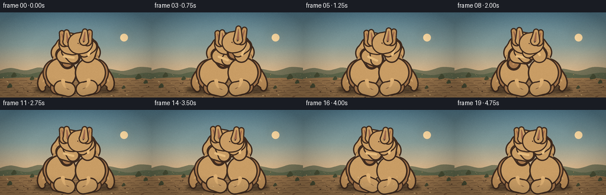
视觉工具实际返回图片 2
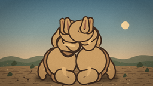
视觉工具实际返回图片 3
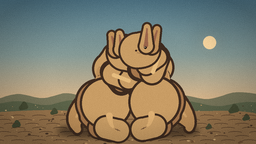
视觉工具实际返回图片 4
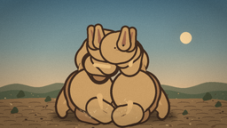
视觉工具实际返回图片 5
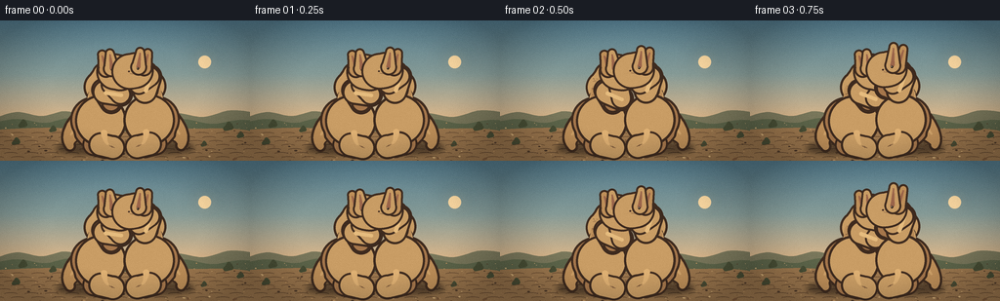
视觉工具实际返回图片 6
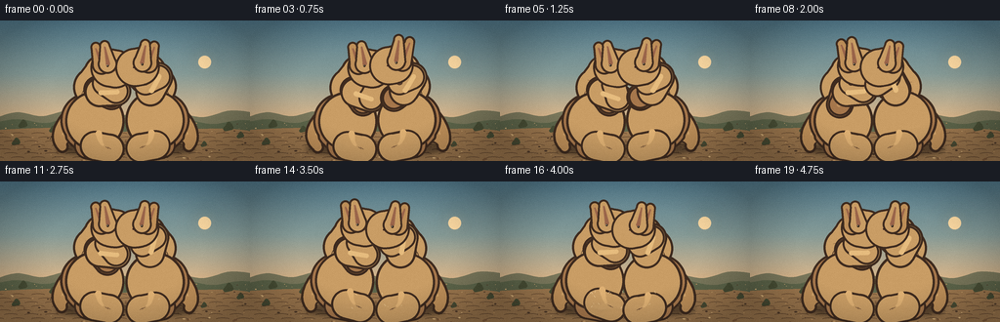
视觉工具实际返回图片 7
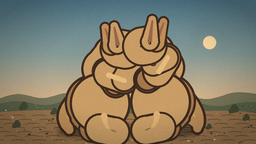
视觉工具实际返回图片 8
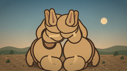
视觉工具实际返回图片 9
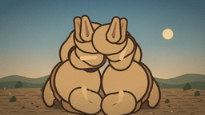
视觉工具实际返回图片 10
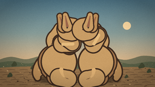
保存候选 2 份；完成命令 16 次；可验证图片返回 10 张。原始 API 响应与完整日志保留在本地。